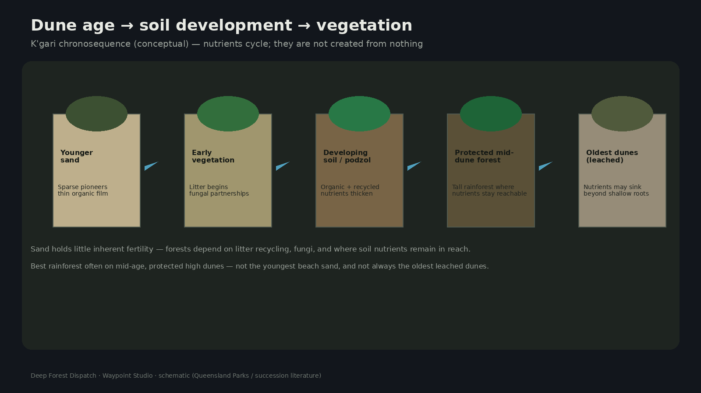

Forest where soil should fail
K'gari — formerly Fraser Island — is a vast sand island. From orbit, bright active dunes sit beside dark green older dune fields. On the ground, visitors meet a sharper surprise: rainforest canopies rising from sand that feels like it should grow almost nothing.
“Pure sand” is a useful provocation, not a lab assay. Quartz-rich dunes are nutrient-poor. They are not empty of coatings, organics, water, or biology.

Age of the dunes matters
K'gari’s dune fields record long histories of sand movement tied to sea-level change — sequences extending hundreds of thousands of years in the wider Great Sandy region. Younger surfaces host pioneers. Given time, litter accumulates, fungi and roots partner, and a thin but working nutrient economy thickens.
Tall rainforest favors protected mid- to high-dune settings where rainfall is higher and nutrients stay reachable. On some of the oldest, deeply leached dunes, nutrients can sink beyond easy root access — succession is not a simple forever-upward arrow.
Recycling, not alchemy
Plants do not invent nitrogen and phosphorus from empty quartz. They capture what rain and sand coatings offer, then recycle what falls as litter. Mycorrhizal fungi and decomposers keep scarce nutrients in circulation under a closed canopy. Break the litter loop and the forest’s advantage shrinks.
The paradox softens once you stop expecting mineral-rich dirt. What you are seeing is a living nutrient system balanced on ancient dunes.